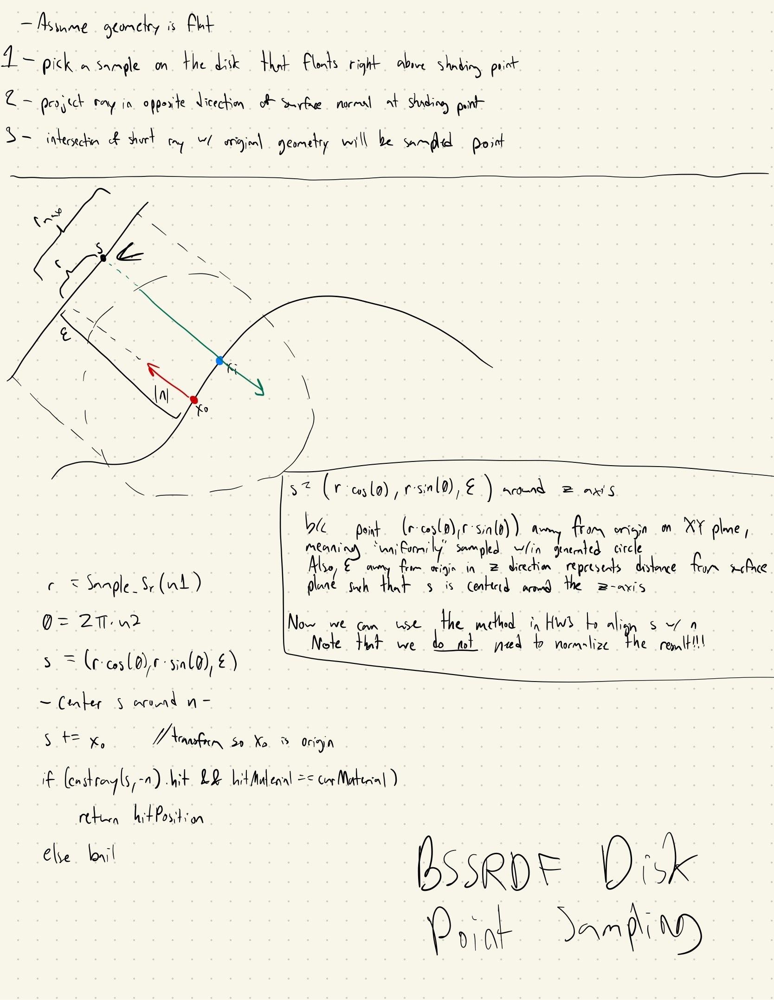
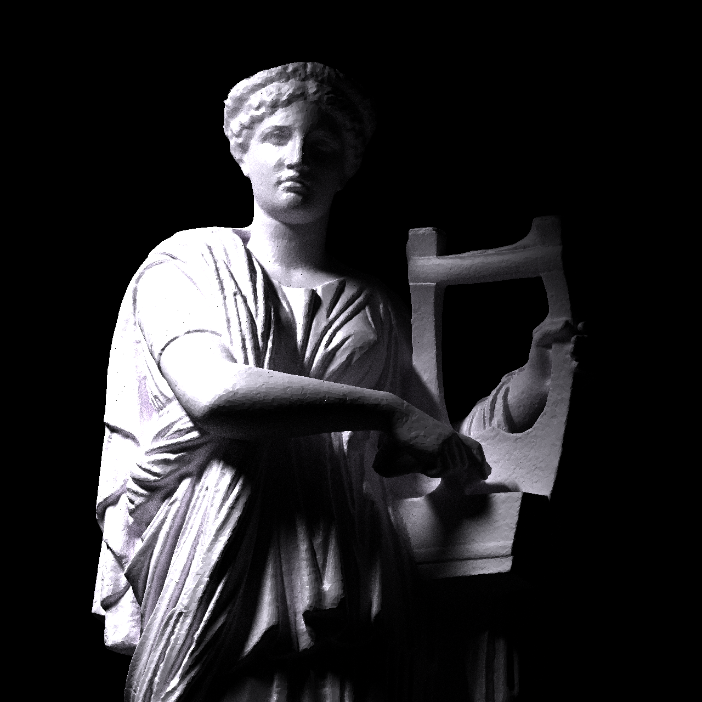
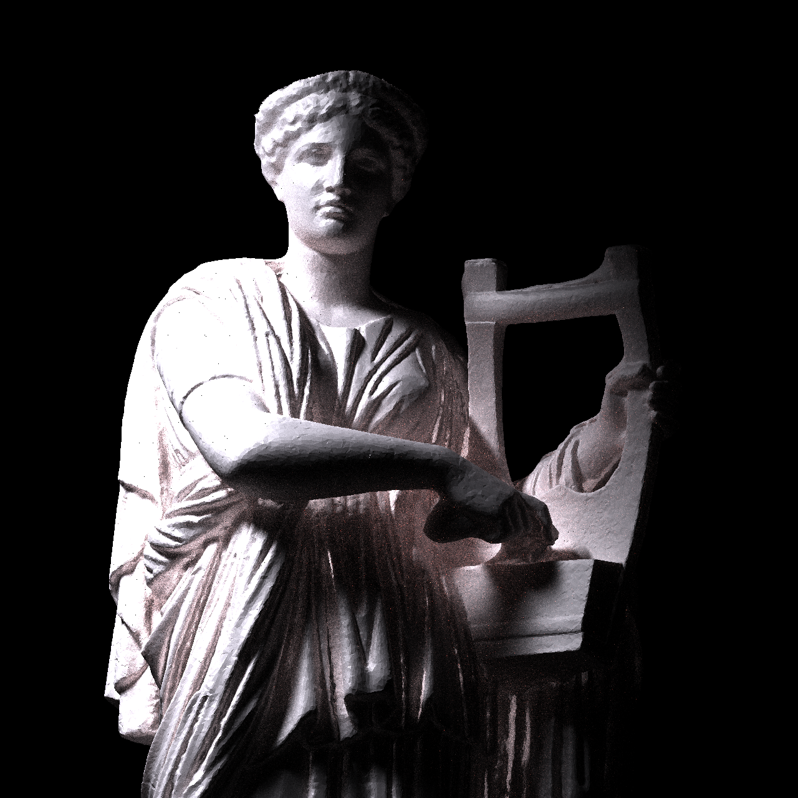
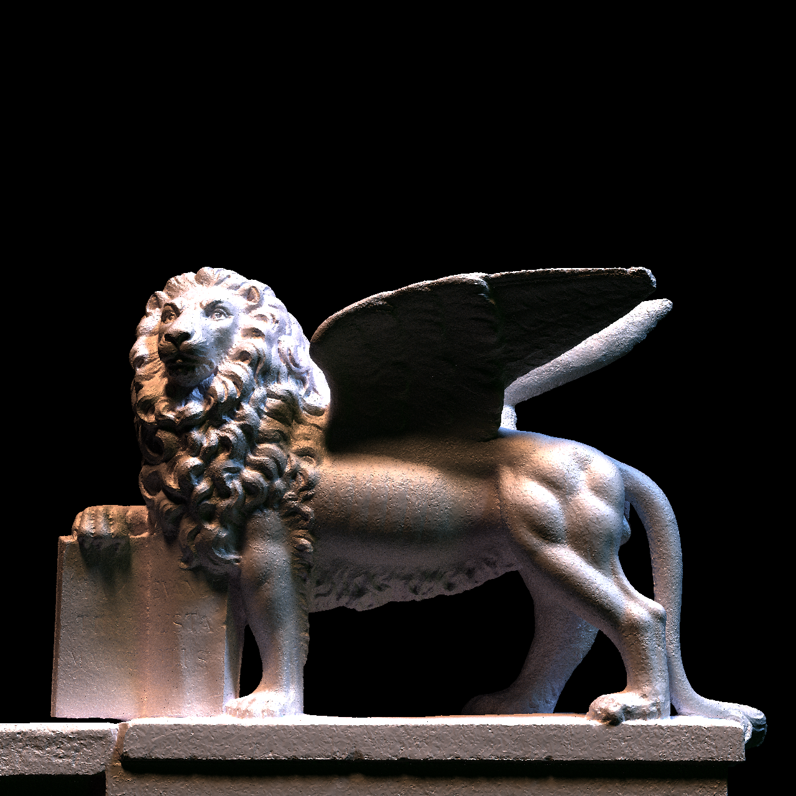
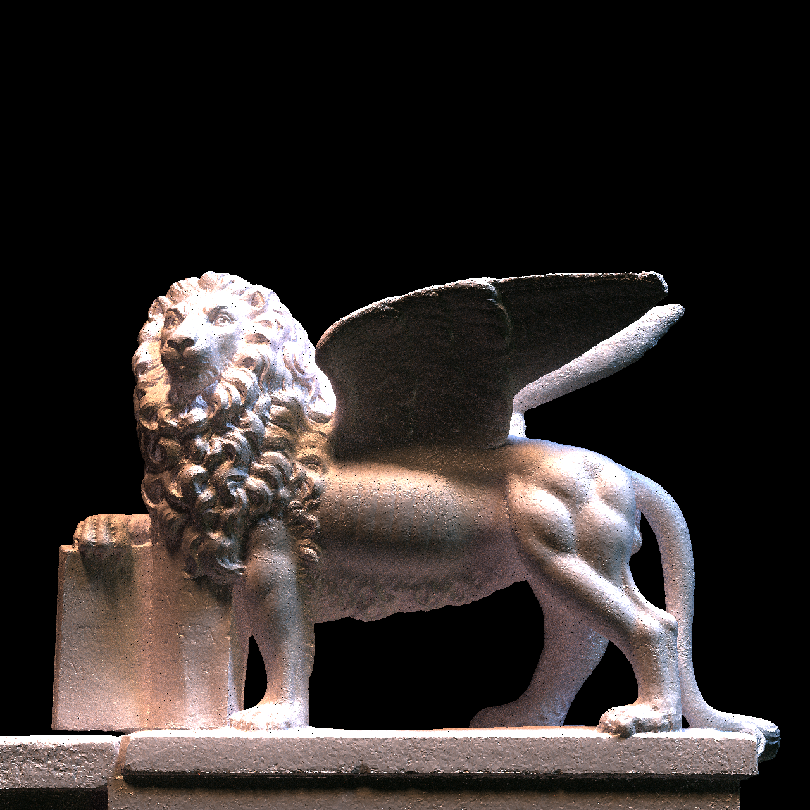
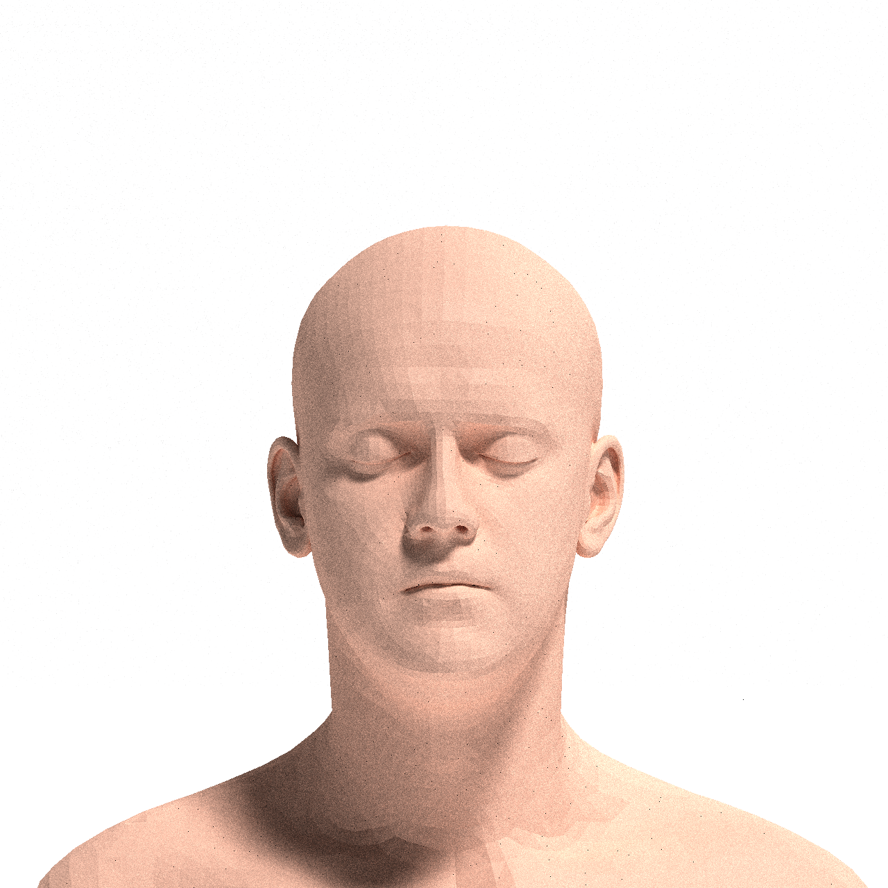
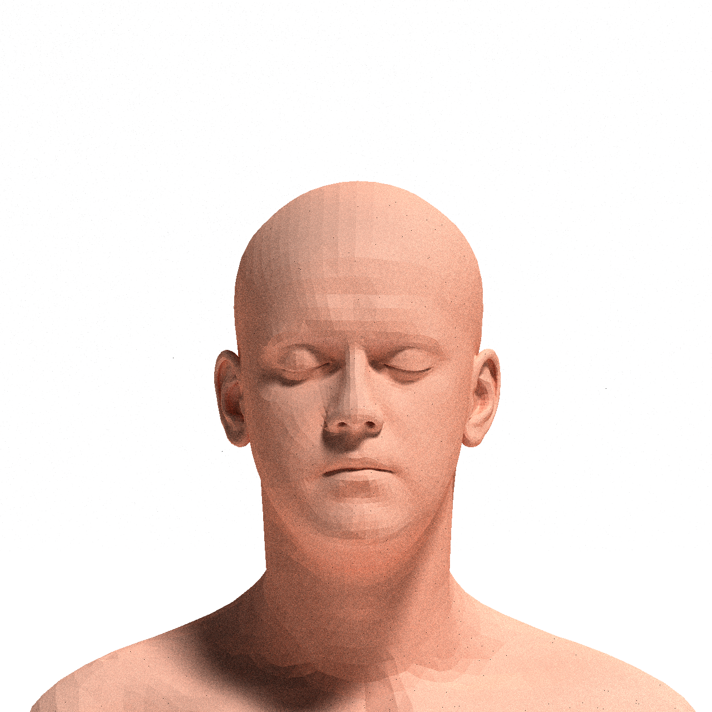
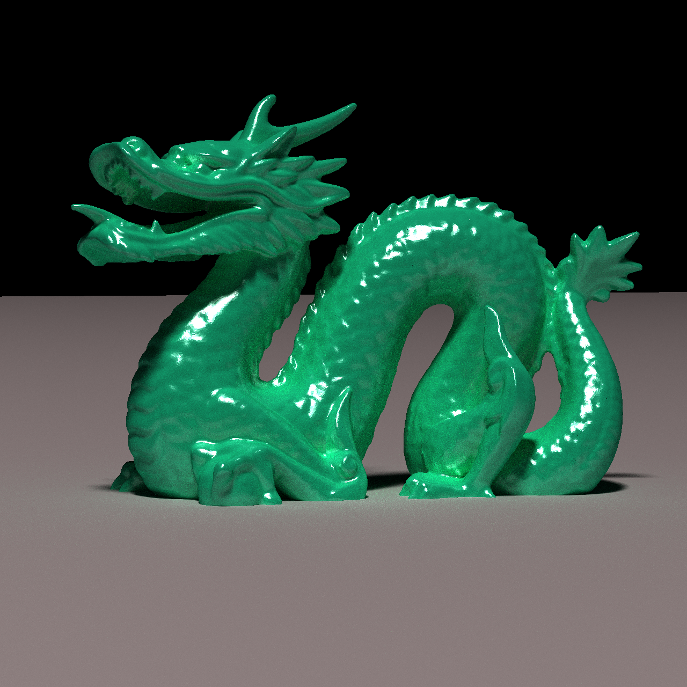
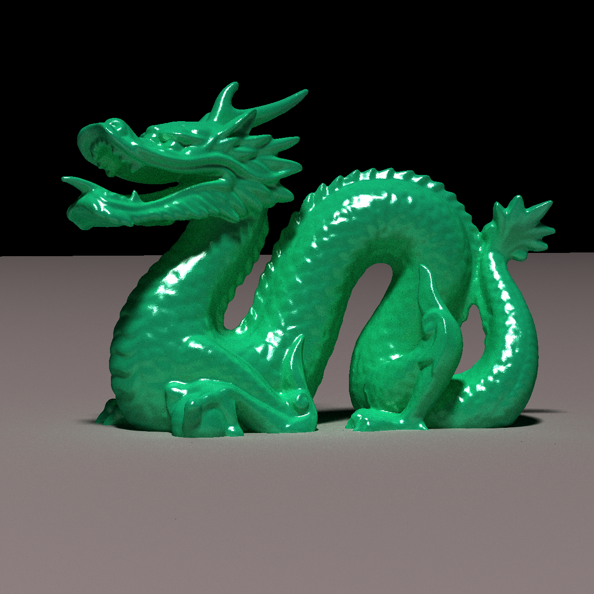
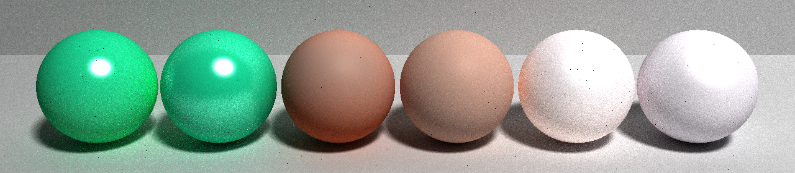

For my final project I extended my path tracer to be able to handle basic subsurface scattering following the method described here. Originally I had planned on using the method described in Jenson’s paper but ultimately ended up using separable subsurface scattering in my own implementation.
I started my project by adding .obj file parsing using the tinyobjloader library. This is how most of the geometry in my images is loaded in, with the exception of lights.
The more challenging part of this project was implementing the subsurface scattering task. While the final result ended up being relatively simple, reading through the different papers and blog posts and understanding the many different ways this technique can be implemented was challenging since many require the renderer to keep track of complex material properties in order to perform the most accurate scattering calculations. Additionally, I had trouble figuring out how to generate a subsurface scattering area sample in a way that was simple enough for this project and didn’t need the aforementioned material properties or multiple importance sampling, since I was somewhat short on time. My solution ended up looking something like this, with some value of epsilon passed in through the scene file:
Basic SSSS:
For my images, I focused on rendering three materials: marble, skin, and jade, but many more can be rendered using the material parameters in the .scene file! All images use 128 spp and are 1280x1280 unless otherwise stated.
My hero image is a marble sculpture with dramatic lighting to showcase the effects of subsurface scattering. It is 5120x5120 with 512 spp but here I have provided smaller versions for comparison purposes.
| No SSS | With SSS |
|---|---|
|  |  |
I also rendered this lion statue to show the same material under different lighting conditions.
| No SSS | With SSS |
|---|---|
|  |  |
Next I decided to render a 3d-modeled head since this technique is often used to more accurately render skin.
| No SSS | With SSS |
|---|---|
|  |  |
Finally, I wanted to show subsurface scattering on a more reflective material and rendered a jade Stanford dragon.
| No SSS | With SSS |
|---|---|
|  |  |
Here are all the materials used under the same lighting conditions. For each pair of spheres, the left one has subsurface scattering enabled, and on the right, the material is rendered with the standard BRDF from homework 3.

I got most of my models from the McGuire Computer Graphics Archive: Morgan McGuire, Computer Graphics Archive, July 2017 (https://casual-effects.com/data)
The lion statue is from: https://skfb.ly/oGDqI
Henrik Wann Jensen, Stephen R. Marschner, Marc Levoy and Pat Hanrahan: "A Practical Model for Subsurface Light Transport". Proceedings of SIGGRAPH'2001. https://graphics.stanford.edu/papers/bssrdf/bssrdf.pdf
Separable Subsurface Scattering: https://www.iryoku.com/separable-sss
Approximate Reflectance Profiles for Efficient Subsurface Scattering: https://graphics.pixar.com/library/ApproxBSSRDF/paper.pdf
BSSRDF Importance Sampling: https://dl.acm.org/doi/10.1145/2504459.2504520 and https://www.imageworks.com/sites/default/files/2023-10/BSSRDF-importance-sampling-imageworks-library-BSSRDF-sampling.pdf
I followed A Graphics Guy’s Notes’ blog post on the topic greatly on my journey to understand how separable subsurface scattering could be realistically implemented in my project: https://agraphicsguynotes.com/posts/practical_tips_for_implementing_subsurface_scattering_in_a_ray_tracer/
I also referenced the 3rd edition of the pbr book: https://www.pbr-book.org/3ed-2018/Volume_Scattering/The_BSSRDF#SeparableBSSRDFs